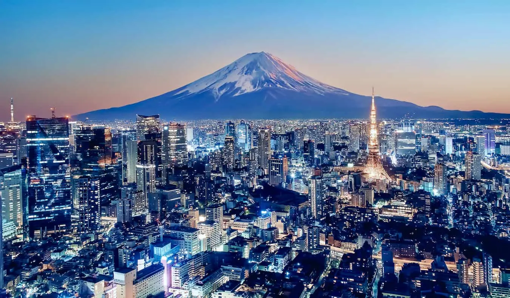

Tokyo
Tokyo, officially the Tokyo Metropolis, is the capital of Japan and one of the most populous cities in the world, with a population of over 14 million residents as of 2023 and the second-most-populated capital in the world. The Greater Tokyo Area, which includes Tokyo and parts of six neighboring prefectures, is the most-populous metropolitan area in the world, with 41 million residents as of 2024.
Activities:
- Tokyo Tower
- Rainbow bridge
- Shibuya crossing